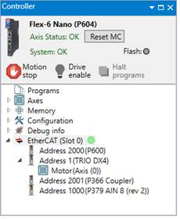
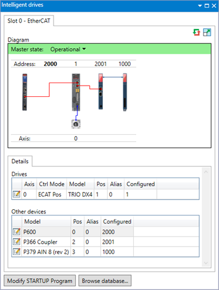
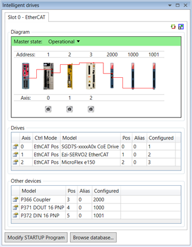
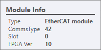
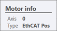
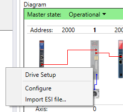

EtherCAT is an Ethernet based multi-vendor supported industrial control bus originally developed by Beckhoff Automation in Germany. The EtherCAT standard supports many types of different device. Trio supports a selection of drives and I/O devices.
The functionality supported for these different devices can be split into 4 categories:
The supported functionality and level of integration into Motion Perfect will vary for these different device types. Not all functionality is available for non-Trio products.
A visualization of the EtherCAT network can be seen either in the Controller tree view

Or from the Intelligent Drives tool

The Intelligent drives dialog contains a tab for each of the controller's interface modules to which supported intelligent drives can be connected. On a tab for an EtherCAT module a diagram of the drives and a list of the correspondingly assigned axes is displayed along with data for each drive and the motor connected to it. Any additional EtherCAT devices (which are not drives) are also shown.

The icon toggles between a normal and higher resolution view of the controller and connected drives.
The state of the EtherCAT network (“Master State” above) can be controlled using the pull-down list and can be set to one of the following states:
Hovering the mouse cursor over the controller displays a pop-up containing information about the current controller or interface module.

Double-clicking on the controller launches EtherCAT diagnostics Wizard which allows the collection of diagnostic information about current configuration. This can also be done by right clicking on the controller and selecting “Collect Diagnostic Info” from the menu.
Hovering the mouse cursor over a drive displays a pop-up containing information about the drive.
Hovering the mouse cursor over a drive displays a pop-up containing information about the motor.

Double-clicking on a device in the network will bring up an EtherCAT Device window for the corresponding device.
Right-clicking a drive icon or a motor icon associated with a drive displays following context menu:

In order to make sure that EtherCAT devices are configured correctly, a set of CoE objects can be added to the STARTUP program. The STARTUP program will ensure that correct values are set for the CoE objects selected by the user. The “ Modify STARTUP Program ” button launches a configuration wizard which allows the user to specify for which CoE objects information should be stored in STARTUP program.
The controller contains an internal database of known EtherCAT vendors and devices. For each device there are one or more predefined profiles containing configuration information such as:
Pressing the “Browse database” button causes a Database Browser Dialog , containing a hierarchical list of known vendors and their products, to be displayed.